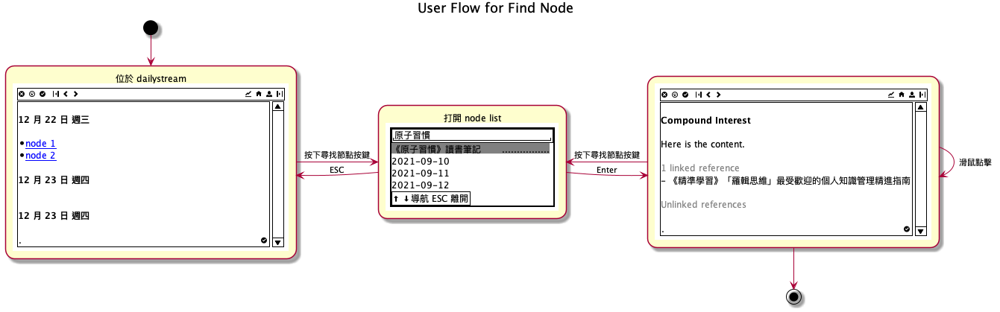

Cuilian Demo 設計文件
淬鍊思想，認知變現
本文件描述淬鍊（cuilian）Demo 的設計文件。淬鍊是一個去中心化加密貨幣投資基金管理軟體，允許任何人無需許可的在區塊鏈上建立自己的主題式加密貨幣基金 DAO。 本 Demo 的動機是以假資料展示個人用介面互動揭露設計概念，取得介面轉換動線回饋，此階段不設計任何 Defi 機制以及代幣經濟。
- 文件版本
- 0.2
1. 使用者圖像
年齡在 35 歲的加密貨幣投資散戶，以 Hold 為主要交易策略。
2. 功能
淬鍊包含兩大功能，分別是投資筆記跟投資組合管理。
2.1. 投資筆記
投資筆記提供使用者分析投資標或是重大資訊作為交易的依據。
當投資人想要計算投資標的的價格跟內在價值時，必定會需要感知整個社會有多少意見，但影響投資標的價格有很多分析師給出不同說法，要判斷誰說得有道理，需要在短時間掌握一門新領域知識，對新知識的掌握度越深入，可以為投資人帶來分析優勢。
舉例來說，一位投資人會為了要搞懂區塊鏈穩定幣監管範圍對自己的衝擊，需要先閱讀法規草案，對其知識點深入了解細節，所謂知識點即是不解其意的名詞，而要了解其中內涵，需要找出定義，方法可以是閱讀書籍、論文、研究報告，或是關鍵人物在社群媒體過去發表的言論，並且勾勒出整個知識網路，以方便在之後的爭論比較中，分析出有多少種立場、多少種決策結果，不同勢力的攻防點，並預演可能出現的狀況來判斷是否有定價錯誤跟催化因素，並據以低價購入投資標的，獲得超額報酬。
為了達到這個目的，投資人需要從若干文件，逐步畫出會閱讀這些文件的群體有哪些人，意見領袖又是誰，是否有代表性跟多元性，再繼續深入了解這些人的看法，以判斷政治、社會變遷、以及技術趨勢作為調倉判斷，整個分析過程約略可以下圖形象表示。(圖取自於 Davis, 2010, Concept mapping, mind mapping and argument mapping: what are the differences and do they matter?) (Davies, n.d.)

筆記並可以組織成科技發展地圖，用以盤點技術現況，說明技術與商業成熟度、智財權發展現況等早期技術TRL、早期產品、成熟產品的改良技術等做競爭分析，競爭分析包括團隊過去發展的相關技術、預計導入的相關技術、盤點各節點上的主要競爭者、國內外產業與學界名單、發展現況。

又因大多數原始資料為保密文件，安全以及隱私性是重要考量，因此時下流行的雲端筆記如 Roam Research 、Notion、Obsidian 、EverNote 皆不在其考量範圍。此外，為了避免工具失去維護導致重要資料遺失，投資人會希望儲存知識的載體應該為純文字（plan-text）檔案，且為通用格式，但又希望可依據不同需求作出不同的同構映射，舉例來說，映射成時間軸，地圖，人物關係，或是在說服階段時如 Zettelkasten 一樣可以將不同的爭論重組成一篇投資計畫，並據此執行。
2.2. 投資組合管理
投資組合提供使用者追蹤投資標的績效以及當初交易的依據筆記。
紀錄交易的細節，在之後整合 DAO 功能時才考慮多人決策的功能。
3. 術語定義
本章描述術語定義。
| 功能區塊 | 中文 | 英文 | 一句話描述 | 在本階段實作 |
|---|---|---|---|---|
| 筆記 | 每日日記 | Daily Journal | 以時間排序顯示日記的頁面 | Y |
| 筆記 | 儲存庫 | Vault | 存放 .org 檔案的目錄 | Y |
| 筆記 | 檔案 | File | 包含許多節點的純文字檔，org-mode 格式 | Y |
| 筆記 | 頁 | Page | 包含許多子節點的節點 | Y |
| 筆記 | 動態頁面 | Dynamic Page | 利用 datalog 取得特定節點並組合頁面 | Y |
| 筆記 | 節點 | Node | 具有原子化（atomic）性質的筆記檔案或段落。 | Y |
| 筆記 | 順向連結 | Forward Link | 當前節點連結到別的節點 | Y |
| 筆記 | 反向連結 | Back Link | 表示別的節點連結到當前節點 | Y |
| 筆記 | 頁圖 | Page Graph | 以階層圖呈現節點內的內容與關係 | Y |
| 筆記 | 鳥瞰圖 | Aerial View | 在二維空間顯示儲存庫中全部的節點與關係 | Y |
| 筆記 | 快速切換 | Quick Switch | 搜尋開啟或建立頁或節點 | Y |
| 筆記 | 快速紀錄 | Quick Capture | 快速紀錄並建立節點的編輯區 | Y |
| 基金 DAO | 投資組合 | Portfolio | 顯示投資組合及當前損益 | Y |
| 基金 DAO | 策略 | Set | 一籃子基於各種指標交易的加密貨幣 | N |
| 基金 DAO | 交易提案 | Trad Proposal | 需要等待 DAO 成員檢視、批准的購入或賣出標的提議 | Y |
| 基金 DAO | 錢包 | Wallet | 作為身份識別的加密貨幣錢包 | Y |
| 基金 DAO | 招喚 | Summon | 質押若干加密貨幣建立一個基金 DAO | N |
| 基金 DAO | 參加 | Join | 質押若干加密貨幣參加一個基金 DAO 並取得份額 | N |
| 基金 DAO | 憤怒退出 | Rage out | 退出一個基金 DAO 並從池子取出自己份額的加密貨幣 | N |
3.1. 儲存庫
儲存庫是一個存放在本地端的目錄，裡面包含 jorunals, images , .cuilian 三個目錄，以及若干 .org 檔案。
在淬鍊第一次開啟該目錄時，會解析目錄內容建立後設資料，存在 .cuilian 目錄中供後續使用。 journals 存放每日筆記檔案, images 存在在筆記檔案中使用的圖檔。
目錄結構範例如下：
-
|- journals/
| |- 2021
| |- 2021-01
| |- 2021-01-12.org
| |- 2021-01-13.org
| |- 2021-01-17.org
|- images/
| |- example.jpg
|- 20220115190944.org
|- 20220114190944.org
|- 20220116190944.org
|- .cuilian/
3.2. 檔案
檔案指的以 .org 格式儲存節點的純文字檔。
#+TITLE: 筆記標題
筆記內容
* 段落一
段落一內容
3.3. 節點
加上 cuilian 專用後設資料的 .org 檔案。
#+PROPERTY:
:ROAMID: $uuid
#+END:
#+TITLE: 筆記標題
筆記內容
* 段落一
段落一內容
3.4. 頁
以更美觀，直覺的方式提供使用者瀏覽或編輯 .org 檔案
3.5. 頁圖
以白板的方式提供使用者瀏覽或編輯 .org 檔案的段落關係
3.6. 鳥瞰圖
以白板的方式提供使用者瀏覽或編輯儲存庫中所有節點關係
4. 情境故事
本章節描述情境故事。
4.1. 分析議題對持倉的影響
4.1.1. 我們要解決什麼問題？以及為什麼？
不同投資者、創辦人在議題常有意見衝突，使用者需要了解是否會對持倉有索影響。使用者目前使用 org-roam 以Zettelkasten 方式來整理術語、相關資訊連結、跟論點。 目前沒有像 Logseq, Obsidian, project meta 將筆記的關係以視覺化方式呈現出來，讓使用者能有全局觀。
4.1.2. 情境故事
當意見領袖熱議的議題出現時，我希望能針對不同意見領袖的論點有全局觀，所以我可以掌握有多少立場跟論述依據，並選擇自己的行動。
4.1.3. 我們如何定義成功
使用者能夠從不同渠道的訊息中整理出關鍵人物所持的論點及其支持或反對的對應關係。
4.1.4. 範圍
一個能將準備好的 org-roam 假資料以圖像方式編輯筆記關係的功能，包含一個能將不同檔案內的筆記段落以卡片方式顯示在畫布上的圖像編輯器。此版不包含編輯功能。
4.2. 規劃交易計劃
4.2.1. 我們要解決什麼問題？以及為什麼？
使用者在得知一個機會點時，會需要擬定交易計劃，並在之後的適當時間執行。
4.2.2. 情境故事
當我得知了一個投資機會，我希望能紀錄期望交易的標的、價格、數量的提案、所以我可以紀錄在我的代辦事項軟體，並在之後適當的時間執行。
4.2.3. 我們如何定義成功
使用者可以建立一個交易提案。
4.2.4. 範圍
- 交易提案功能
- 追蹤交易明細跟狀態
- 不自動執行交易計畫，
- 不提供批次建立
- 不提供單筆修改跟批次修改
4.3. 復盤交易
4.3.1. 我們要解決什麼問題？以及為什麼？
使用者在虧損時想知道自己因為怎樣的錯誤判斷。
4.3.2. 情境故事
當我需要了解虧損原因時，我希望能夠查看該筆虧損交易的原因，所以我可以避免再次犯下錯誤。
4.3.3. 我們如何定義成功
使用者可以檢視一個當初交易關聯的分析筆記。
4.3.4. 範圍
- 提供交易紀錄清單。
- 不提供搜索跟過濾功能。
5. 使用者流程
本章描述框線圖（wireframe）的轉換動線。
5.1. 導航

5.2. 第一次啟動
5.3. 開啟首頁
預設首頁是每日日記。
5.4. 連接錢包

5.5. 新增節點到頁面

5.6. 新增節點到圖

5.7. 以頁面的方式開啟節點

5.8. 以圖的方式開啟節點

5.9. 提案購買/賣出

5.10. 處理交易提案

6. 操作定義
本章描述操作快捷鍵。
| 按鍵組合 | 說明 | 本階段實作 |
|---|---|---|
| Cmd + o | 開啟儲存庫 | Y |
| Cmd + 1 | 開啟每日日記 | Y |
| Cmd + 2 | 開啟筆記 | Y |
| Cmd + 3 | 開啟鳥瞰圖 | Y |
| Cmd + 4 | 開啟投資組合 | Y |
| Cmd + 5 | 開啟設定 | Y |
| Cmd + f | 尋找節點 | Y |
| Cmd + i | 插入節點 | Y |
| Cmd + c | 複製 | Y |
| Cmd + v | 貼上 | Y |
| Esc | 取消當前動作 | Y |
7. 介面示意圖
這裡以名為 SenseTW 的線上意見整理工具作為介面設計參考。SenseTW 當初開發目的是為了做社會議題分析。
7.1. 鳥瞰圖
7.2. 在鳥瞰圖檢視節點

7.3. 處於論點對應的節點
8. 技術架構
- 使用者透過 MacOs Desktop App 執行區塊鏈上的合約。(demo 版本不實作區塊鏈功能)
- 使用者的資料儲存在本地端，在加密後透過 IPFS 之類的分散式儲存空間做跨裝置資料同步。 (demo 版本不實作做跨裝置資料同步)
- 使用者擁有的資料將能夠很容易地與其他文字編輯器、文字格式的記帳軟體整合。(以 org-mode 格式為主)

9. 聯絡
歡迎在 Twitter 聯絡 @hychen 給予設計意見。